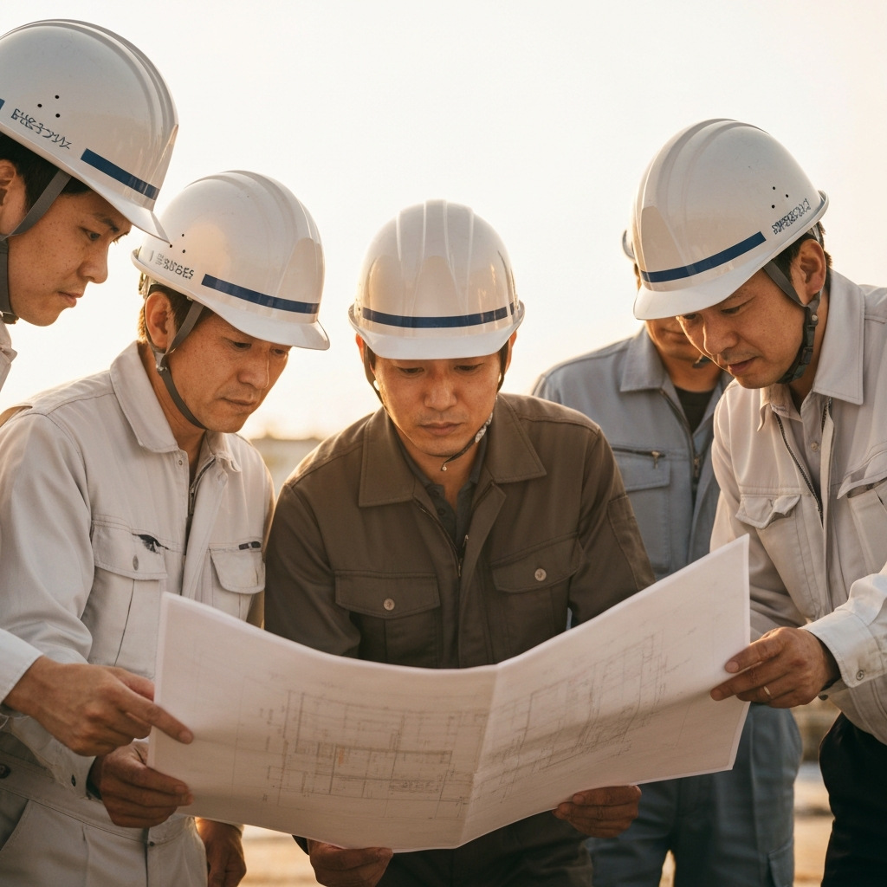
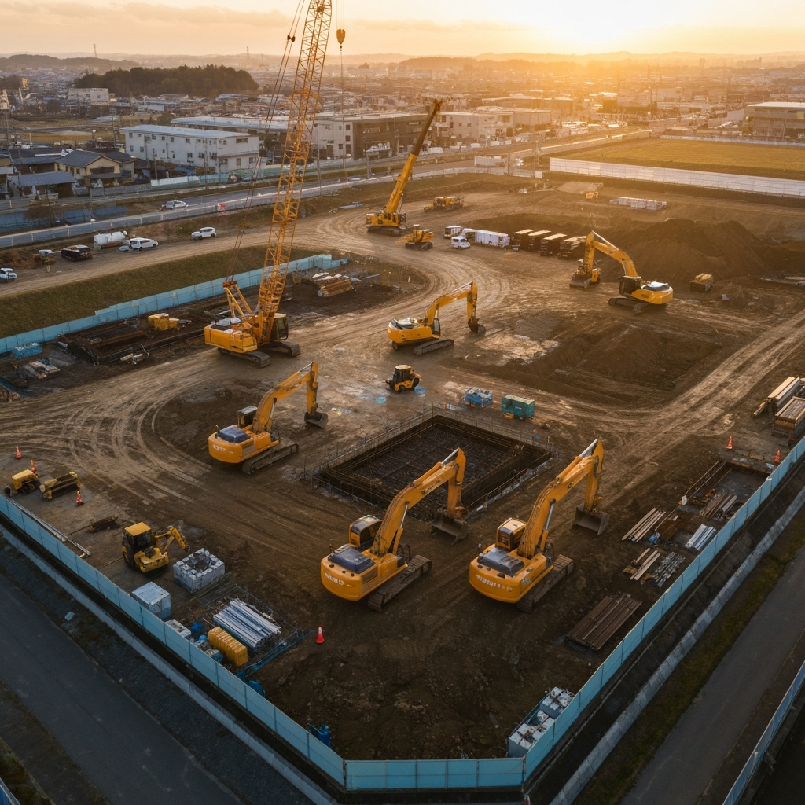
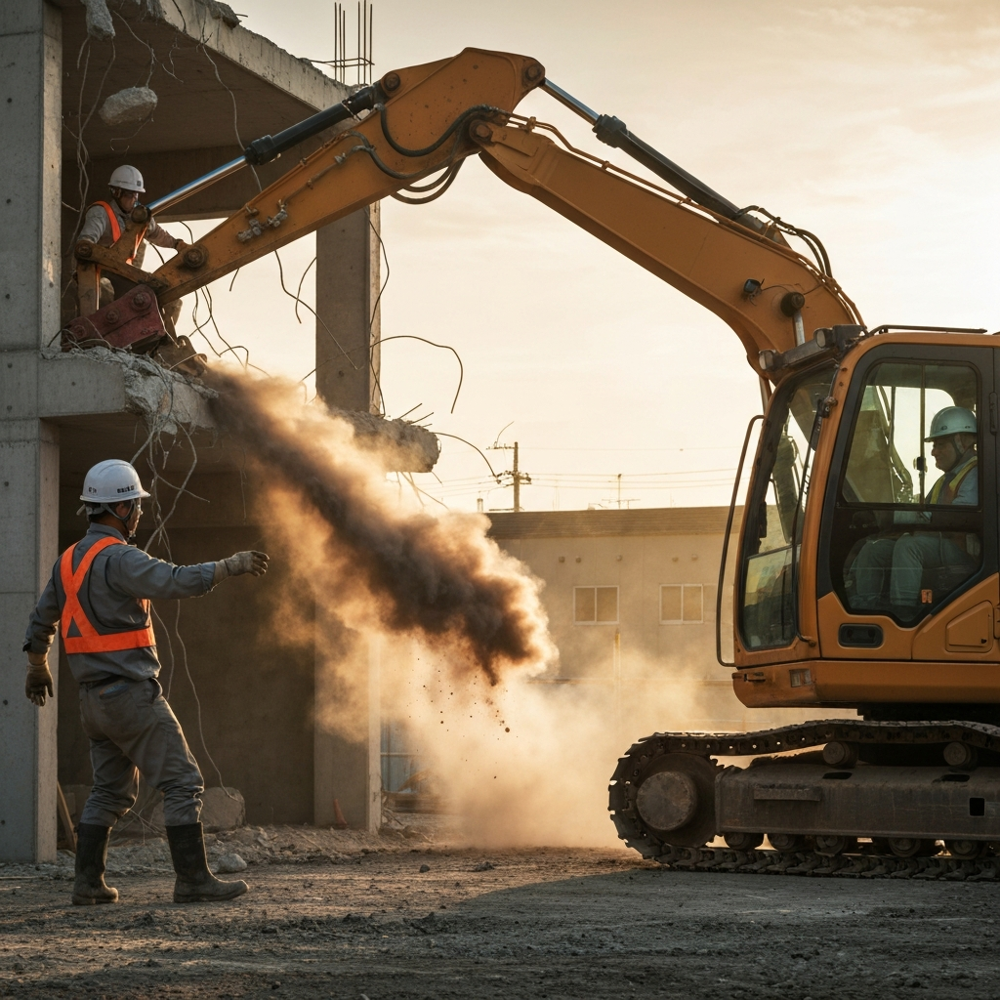
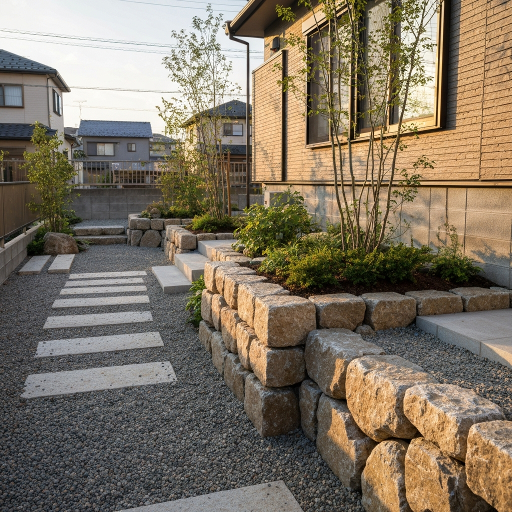
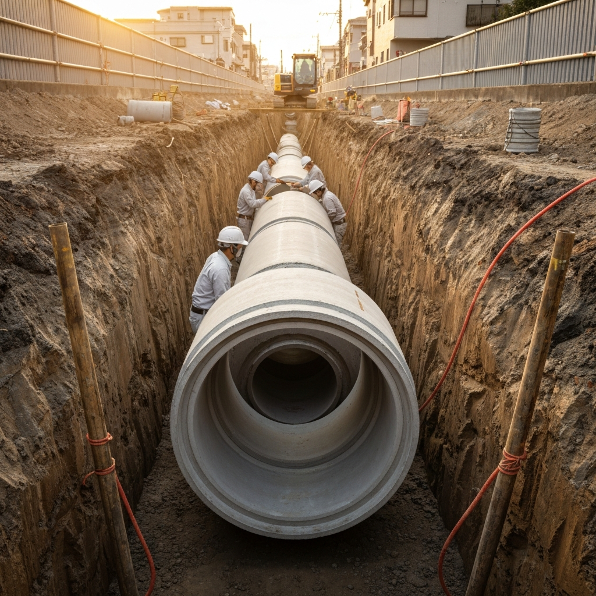
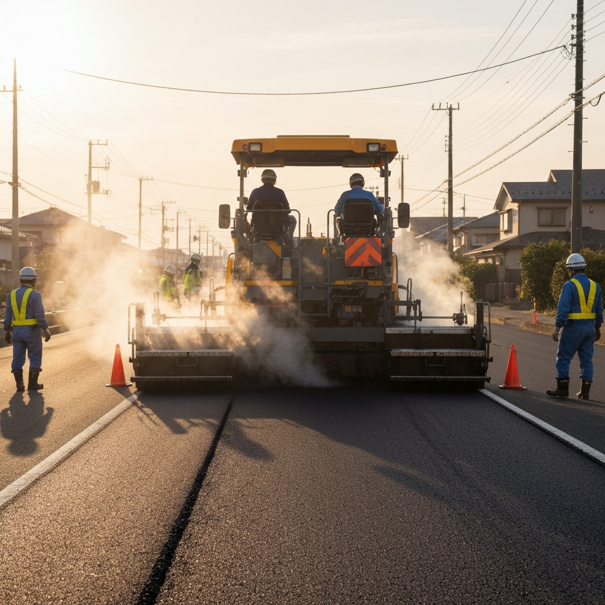

岸田興力会は、公共工事・解体工事・外構工事・下水道工事を手がける総合建設会社です。
創業以来、地域に密着し、確かな技術力と誠実な対応で数多くの実績を積み重ねてまいりました。 インフラ整備から住環境づくりまで、一つひとつの現場に真摯に向き合い、安全で快適な街づくりに貢献しています。
「地域に根ざした確かな技術と信頼で、暮らしと街のインフラを支える」—— この理念のもと、 お客様と地域社会のために、これからも挑戦を続けてまいります。
公共インフラから民間工事まで、幅広い分野で確かな技術を提供します

道路・橋梁・河川などの公共インフラ整備に携わり、地域社会の基盤を支えています。官公庁からの信頼も厚く、大規模プロジェクトにも多数参加。

住宅からビル・工場まで、安全かつ効率的な解体を実施。近隣への配慮を徹底し、産業廃棄物の適正処理・リサイクルにも取り組んでいます。

駐車場・フェンス・造園・擁壁など、住まいの外まわりを美しく機能的に。デザインと耐久性を両立した、暮らしに寄り添う外構をご提案します。

上下水道の新設・改修・維持管理を行い、地域の衛生環境を守ります。最新の技術と豊富な経験で、確実な施工をお約束します。
これまで手がけた代表的なプロジェクトをご紹介します

延長約500mの市道舗装工事。交通規制を最小限に抑え、近隣住民への影響を考慮した施工を実施。
RC造3階建ての商業施設を安全に解体。アスベスト除去から産廃処理まで一貫対応。
カーポート・フェンス・植栽・アプローチまで外構全体をデザイン施工。お客様のご要望を形に。
住宅地の下水管新設工事。掘削から管布設、路面復旧までの一連工程を安全に完遂。
公共工事から民間工事まで、土木・建築のあらゆる分野をワンストップで対応。複合的なプロジェクトも一括でお任せいただけます。
無事故・無災害を最優先に、独自の安全管理体制を構築。全現場でKY活動・安全パトロールを徹底しています。
地元を知り尽くしたスタッフが、地域の特性に合わせた最適な施工をご提案。迅速な対応と細やかなアフターフォローが強みです。
最新の建設技術と熟練の職人技を融合。資格保有者が多数在籍し、高品質な施工を安定的にお届けします。
| 会社名 | 岸田興力会 |
|---|---|
| 所在地 | 〒560-0021 大阪府豊中市本町1丁目5-16-2 |
| TEL | 06-6843-1015 |
| FAX | 06-6844-0396 |
| 事業内容 | 公共工事、解体工事、外構工事、下水道工事、土木工事全般 |
| 代表 | 岸田 堅 |
| 営業時間 | 月〜金 8:00〜18:00 / 土 8:00〜17:00 |
| 定休日 | 日曜日・祝日 |
岸田興力会では、地域のインフラを支える仲間を募集しています。 経験者はもちろん、未経験者も歓迎。丁寧な指導と資格取得支援制度で、 あなたの成長をサポートします。
〒560-0021
大阪府豊中市本町1丁目5-16-2
阪急宝塚本線「豊中駅」より徒歩5分
施設内駐車場あり（7台）
工事のご相談・お見積りなど、お気軽にご連絡ください
06-6844-0396
24時間受付